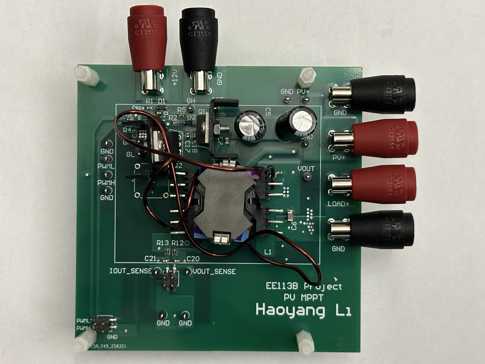
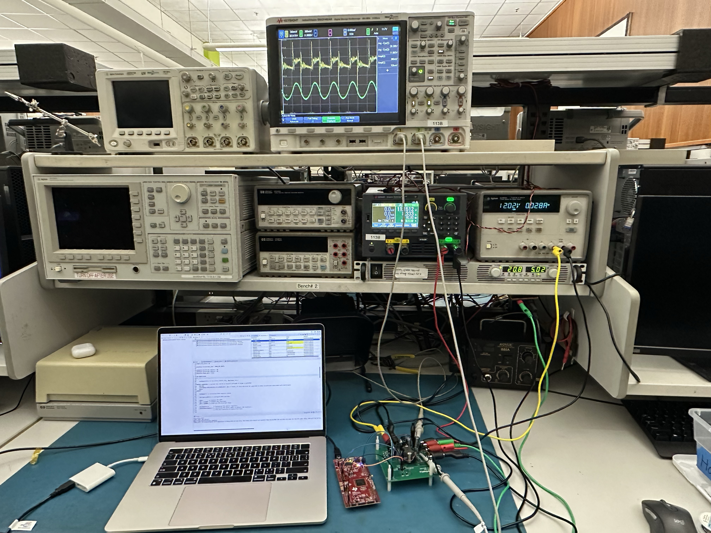

Fully Integrated WiFi6 Baseband Programmable Gain Amplifier (PGA) + Low-Pass Filter Design
Design and Test of Synchronous Buck Converter for Photovoltaic (PV) Maximum Power Point Tracking (MPPT)

Custom Designed MPPT Buck Converter PCB

Testbench Setup
Analysis and Design of LCD Driver Amplifier
Implement the Tetris game on FPGA using the Verilog HDL programming language